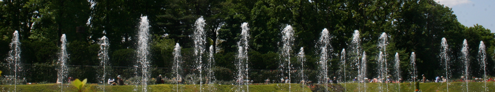

準備中

| 作文 打出の小づち ここは「道場日記抄」からの抜粋のページです。 一振りすると、何かいいものが出てきます。 |
| 作文編 「もくじ」の「項目」をクリックしてください。 （「掲載年月日」をクリックすると、元の掲載ページに飛びます） |
| № | 項 目 | 掲載年月日 | № | 項 目 | 掲載年月日 | |
| １ | 作文のこころ | Mar.4 '07 | ２ | 作文の素質 | Nov.11 '07 | |
| ３ | 作文の材料探し | Oct.7 '04 | ４ | 書き方指南 | May 20 '10 | |
| ５ | 作文みるみる上達記 | Dec.7 '99 | ６ | 授業見学 | May 12 '04 | |
| ７ | 鳥観図１（トトロの森） | Jul.1 '08 | ８ | 鳥観図２（吉野ケ里） | Jul.15 '08 | |
| ９ | 春の声・母の声 | Feb.11 '10 | １０ | 作文と証明問題 | Mar.18 '07 | |
| １１ | 「やる」と「する」 | Sep.16 '10 | １２ | 「ぬかす」、「なので」 |
Oct.7 '13 |
|
| １３ | 七五の四行詩 | Sep.25 '05 | １４ | 部活の作文 | Aug.5 '04 | |
| １５ | スポーツ少年と作文 | Jun.9 '05 | １６ | 読書少年 | Nov.11 '04 | |
| １７ | コンクール作文 | Sep.2 '10 | １８ | 長期の大作 | Apr.22 '13 | |
| １９ | 模擬問題づくり | Dec.1 '11 | ２０ | 演習プログラム | Feb.28 '13 | |
| ２１ | 名文 | Feb.24 '11 | ２２ | 職業講話 | Sep.25 '03 | |
| ２３ | 新傾向の入試問題 | Jan.28 '04 | ２４ | 中高一貫校の作文 | Oct.8 '06 | |
| ２５ | 旅便り（社会科作文） | Jul.28 '04 |
小学生の作文と国語 中学生の作文と国語 高校生の国語
公立中高一貫校入試の作文 高校入試の作文・小論文 大学入試の小論文
作文ワールド（扉） 答案百花（扉） 作品展示場（扉）
Home（トップページ） 道場日記抄
打ち出の小づち−総もくじ； 国語編； 小論文編； 閑話
| 補遺・補足 | |
|
Mar.4 '07 ＜ 作文のこころ ＞ Jun.17 '10 〔 作文の心 〕 ２つの話が長くなってしまったので、「作文の心」については他日を期すことにするが、これは、簡単にいえば、小４の涼ちゃんが学校で、「楽しかった中味を具体的に書いてある」とほめられた話である。 |
※ 日記の内容は、中略をするなどして簡略化してあるが、肝心の「作文のこころ」は末尾に添えられている程度である。 その次の日記も同様である。 さっそく補足が必要となる。 こちらへ。 ※ 「２つの話」というのは「バラの観賞｝と「ツバメの誕生」のこと。 |
| ○ 「こんなことがあった」→「それについて、こう思う」 体験や見聞をありのままに書き、それに感想なり意見なりを添える。 あるいは、 ○ 「いつ、どこで、何があったか」→「それがどうであったか」 全体の案内（鳥観）をしておいて、「何」にあたることがらを具体的に書く。 ◎ 具体例は「作文ワールド」のそれぞれの作文へ。こちらへ。 ○ ようやく念願がかなって、「作文のこころ」のサイトを設けることになった。 こちらへ |
| （１）素質はだれにもある。 | 補遺・補足 |
| Nov.11〜25 '07 「うちの子は作文が苦手で、……」 訪ねておいでのお母さん方はどなたもこうおっしゃる。それに対する返事は「だれでもそうですよ。むしろ、得意な子はほとんどいないと言ってよいでしょう」となる。それは、学校では小学３年生を過ぎると、作文を書くことはあまりないためであるが、実際、文章を書くとなると、大人でも苦労するのである。 では、得意になる方法は、となると、要は書き慣れること、つまり、練習することである。ところが、多くの諸君が困っているのは何をどう書いてよいか分からないということである。 そこで、当道場では初めに、おもしろかったことや楽しかったことの「あんなこと、こんなこと」をメモ形式で書き出してもらう。 そのメモは「いつ、どこで、何があったか」で、作文ではその何について「それがどうであったか」を具体的に書いていくことになる。書き方のパターンをこのようにしておけば、何をどう書けばよいのかという第一の難題は解決する。あとは状況をありのままに書いていけばよいのである。 とは言うものの、言うは易く行うは難し。難題は続く。「具体的に書く」「事実を正確に」「主語・述語を整えて」等々。ただ、これらを具体例によって語れば、一巻を要する。そこで、これらについては取りあえず「作文ワールド」や「答案百花」の添削例をもって説明に代え、先へ進もう。 とにかく、練習によって生徒諸君は書き慣れていく。ただし、ここで注意しておかなければならないのは、人によって遅速の差があるということである。そこで、もう一つ注意したいのは、筆が進み始めるまでは周りの者、特にお母さんには我慢が要るということである。 中には「うちの子は作文には向かない」と言って、あきらめてしまう人がいる。問題はこれである。 「〜に向く・向かない」というのを、例えばスポーツにおいてみてみると、「野球に向く」とか「サッカーに向かない」とかはよく耳にする。仮に、向かないと思っても、練習を続けていさえすれば、ひととおりのことはできるようになる。それは、１年前を振り返れば実感できるであろうし、入りたての子と比べれば差が歴然としているのｇｓ分かるであろう。要するに、練習を続けさえすれば、だれでもできるようになる。つまり、素質ははあるのだ。 |
| （２）プロとアマ | 補遺・補足 |
素質はだれにもあるのは間違いない。ただし、野球にせよサッカーにせよ、そこにプロ選手をもってくるなら、話は別である。 スポーツであれ、他の分野の何であれ、プロには一般の人とは違った何かがあるようだ。 話は少しそれるが、プロとアマの違いは何かを探ってみると、これを、例えば将棋においては「ロマンだ」と言った人がいる。いわく言いがたいところを言葉にすれば、こういうことになろう。けだし、名言である。 このようなロマンの有る無しを尺度に、文章の世界でプロを考えてみると、それは言うまでもなく詩人や小説家であろう。ところが、作文を習おうとする者は必ずしもプロを目指しているわけではない。 プロの能力を素質というなら、一般人にそのような素質はない。しかし、文章を書く素質あるのだ。 少し深入りしてしまったようだ。話を元に戻そう。野球やサッカーの素質はだれにでもあり、練習すればできるようになるのと同様、作文も練習次第でできるようになるのだ。 ここから、「詩や小説を書くのは難しいが、説明文や論文を書くのは易しい」ということが言える。 このことについて考えてみよう。 |
※ これをより詳しく論じるなら、「人間は言葉をもてる動物である」ということを以ってすれば足りようか。 |
| （３）説明文なら、だれにも書ける。 | 補遺・補足 |
|
名作といわれる詩や小説は、芸術の一回性ということからすれば、方法を伝授することはできない。ただ模倣することができるだけである。 |
※ 大切なのは「事実」である。理屈が「論理」なのではなく、「事例」→「考察」→「見解」の流れが「論理」なのである。よって、論理は事実に始まるとも言える。 |
作文においても、大切なのは練習と忍耐であるようだ。
もどる
| 補遺・補足 | |
|
Oct.7 '04 |
◎ この中で、「３・４時間目は図工で、……」とあれば、しめたものである。 「何を作ったか」に始まり、材料、手順を書いていく。何週かかかる場合があり、手順を書くのは難しいが、書き上げれば、達成感も味わえる。 そのようにして書いた作文の２〜３の例はこちらへ。 |
ここに言う「きのうのこと」は、実は日記の手法である。
日記を続けている人は、たいてい
「その日の主なできごと一つ」を書くようになる。
| 補遺・補足 | ||
|
May 20 '10
|
「公務員試験の作文」 「入社試験の論作文」 「公務員試験の小論文」では適宜「講評」の形でアドバイスを付記している。 ◎ これがきっかけで、当「作文打出の小づち」の誕生となった。 道場の主宰には既に 『論作文の奥義』、 『必勝のパターン』 の著書があるが、これらとはニュアンスの違ったものになろう。 電子書籍にしてもよいかもしれない。 ○ 「作文は二段落構成で。前段には経験したことを、後段には意見や感想を」というのは、このパターンである。 ※ 社内レポートでは、お父さん方が経験するところであろう。 ◎ 「書き方指南」、すなわち、『作文打出の小づち』は、このような方針で作られることになる。 |
「書き方指南」といえば、実は随所でアドバイスを行っている。
小中学生の作文については
「作文ワールド」から項目別に個々の作文へ。
もどる
この上達記については、改めて、
誕生の秘話ともいうべき発端を紹介しておこう。
| 補遺・補足 | |
| １２月に入って早々、勇樹くんが長足の進歩ともいうべき作文を送ってきた。 彼は中１生で、お父さんがこのホームページをご覧になって、交流が始まった。もっぱら電話とファクスでのやり取りである。２か月前にはメモ程度のたどたどしいものだったのが、６００字の体験記を送ってきたのだ。驚くやら、うれしいやら、思えば、これは一編のドラマである。これほど早く書けるようになるとは思わなかったが、実は、この過程では道場の生徒諸君の協力もある。 機会を改めて、この出来事をドキュメンタリーにまとめたいと思う。 追記：このドキュメンタリーは『勇樹くんの作文みるみる上達記』に結実。こちらへ。 |
この項との関連で、もう一つの出来ごとを続けて紹介しよう。
はじめに「あんなこと、こんなこと」の作成を課すのは、
たいていの生徒は、
始めのうちは、何を書いていいか分からないというためである。
各項２つずつ、計８〜１０も書いておけば、
２か月は題材探しに困らない。
その後はメモがなくても、その都度題材を見つけてくるようになる。
もどる
修学旅行（吉野ケ里）の鳥観図の手法については、次項２参照。
もどる
この3部作は、「作文ワールドⅢ」…「社会科作文３」に掲載されている。
こちらへ
| 補遺・補足 | |
準備中
しばらくお待ちください。
ご意見・ご希望・ご質問はこちらへ
もどる
| 補遺・補足 | |
|
Oct. 7 '13 ＜ 「ぬかす」、「なので」 ＞ |
ついでながら、「なので」を使う生徒には、「だから」といっしょに
辞書を引かせる。そうすると、
「だから」は載っているが、「なので」は載っていない。
これによって、生徒たちは、
「なので」はまだ公認された言葉ではないことを知る。
もどる
